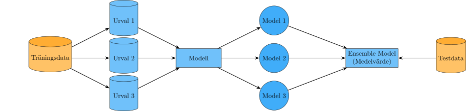

30 Ensemblemetoder
Istället för att förlita sig på en enstaka modell kan vi kombinera flera modeller i en ensemblemodell. Grundidén är att med hjälp av flera modeller kan respektive fokusera på olika egenskaper av data och när de kombineras blir prediktionerna bättre.
Det finns många olika varianter men de delas ofta upp i två olika metoder; fokusera på data eller på modeller. Vi kan med hjälp av bootstrapping eller bagging (bootstrap aggregating) göra slumpmässiga urval från träningsdata och skatta modeller på dessa olika urval. Vi kan också med hjälp av boosting vikta observationer i urvalen beroende på olika kriterier, exempelvis vikta upp de observationer som en modell inte lyckats prediktera rätt och vikta ner de observationer som en modell lyckats prediktera rätt.

Metoder som fokuserar på olika modeller innebär att träna flera olika modeller på samma data eller samma modell med olika hyperparametervärden som sedan kombineras.
30.1 Bootstrapping och Bagging
Bootstrapping är en klassisk teknik för att skapa nya datamaterial från ett begränsat insamlat data. Metoden går ut på att vi skapar \(B\) urval där observationer väljs med återläggning från träningsmängden som vi sedan använder för att skatta olika modeller eller funktioner. Metoden används inom frekventistisk statistik för att skapa skattningar av de sanna parametrarna och deras medelfel och samplingfördelning, men inom maskininlärning används den med ett annat syfte.
Bagging tar alla \(B\) bootstrapurval och tränar en modell på respektive urval \(\hat{f}_b\). Vi kan se det som att vi replikerar datainsamlingen \(B\) gånger och tränar en modell för varje replikat. Nu är inte bootstrapurval ett helt nytt datamaterial eftersom vi utgår från samma ursprungliga data men vi kan ändå få nytta av den ytterligare informationen. Den slutgiltiga modellen får vi genom att aggregera alla dessa modeller med exempelvis dess medelvärde vid regression. För klassificering kan vi använda majoritetsröstning för att bestämma den slutgiltiga prediktionen. \[ \begin{aligned} \hat{f}_{bag}(\boldsymbol{X}) &= \frac{1}{B} \sum_{b=1}^B \hat{f}_b(\boldsymbol{X})\\ \hat{f}_{bag}(\boldsymbol{X}) &= argmax_j \sum_{b=1}^B I\left(\hat{f}_b(\boldsymbol{X}) = j\right) \end{aligned} \]
Om vi minns tillbaka till Figur 26.7 vet vi att en komplex modell ofta har en hög(re) varians som ökar felet. Bagging sänker variansen av den anpassade funktionen så att en mer komplex modell ändå blir generaliserbar men påverkas mycket av kvalitén av modellen som anpassas. Om modellen är bra blir aggregeringen bättre, men en dålig modell blir sämre när den aggregeras.
CautionÖvning 1
Vid bagging skapas flera bootstrapurval från samma träningsmängd. Anta att träningsmängden innehåller observationerna A, B, C, D och E. Ett av bootstrapurvalen med storlek 5 blev A, A, C, E, E. Fyra regressionsmodeller tränas därefter på var sitt bootstrapurval. För en ny observation ger modellerna prediktionerna 4.2, 5.8, 6.1 och 7.9. Den aggregerade prediktionen beräknas som \(\hat{f}_{bag}(\boldsymbol{X})=\frac{1}{B}\sum_{b=1}^{B}\hat{f}_b(\boldsymbol{X})\). Vilka av följande påståenden är korrekta?
- Sant. Bootstrap innebär urval med återläggning. Därför kan samma observation väljas flera gånger, samtidigt som andra observationer kan saknas i ett enskilt urval.
- Sant. Den aggregerade prediktionen blir \((4.2+5.8+6.1+7.9)/4=6\).
- Sant. Enligt underlaget är baggings huvudsakliga effekt att minska variansen. Metoden beskrivs inte som en metod som i första hand minskar bias.
- Falskt. Bagging kan minska variationen mellan skattningar, men det innebär inte att en systematisk bias som delas av grundmodellerna automatiskt försvinner.
- Falskt. Bootstrapurval görs med återläggning. Observationerna kan därför förekomma flera gånger i samma urval.
- Falskt. Ett större \(B\) innebär att fler bootstrapurval och fler modeller skapas. Det förändrar inte automatiskt antalet unika observationer i varje enskilt urval.
30.2 Random Forest
Specifikt för trädmodeller kan bagging ge stora förbättringar i den slutgiltiga prestandan men det finns vissa problem. Bootstrapurvalen är korrelerade, varje urval ser nästan likadana ut vilket ofta leder till väldigt snarlika modeller. En konsekvens blir att den modellvarians som vi hoppas bli mindre, inte längre blir det när vi beräknar ett medelvärde över modellanpassningar som liknar varandra mycket.
Random Forest löser problemet med korrelerade modeller genom att slumpmässigt ändra modellerna som tränas. När vi tränar ett träd från ett bootstrapurval används endast en slumpmässig delmängd (\(q \le p\)) av de förklarande variablerna vid varje uppdelning. Storleken på \(q\) bestämmer vi själva men skaparen av Random Forest, Leo Breiman (Hastie m.fl. (2001)), föreslår följande tumregler:
\[ \begin{aligned} \text{Klassificering} \qquad &q = \sqrt{p}\\ \text{Regression} \qquad &q = \frac{p}{3} \end{aligned} \]
Varje modell tränas både på ett urval av observationer (med återläggning) och ett urval av variabler vilket leder till ett minskat bias, “artificiell” varians i varje träd och mindre korrelation mellan träden. Ofta dominerar den avkorrelerade effekten vilket leder till att MSE minskar på testdata. Andra fördelar med Random Forest är att den är lätt att parallelisera samt att det urval av parametrar som görs minskar kostnaden för varje uppdelning.
Metoden har, utöver de vanliga hyperparametrar från ett enskilt beslutsträd, två ytterligare hyperparametrar i form av \(B\) och \(q\).
CautionÖvning 2
Random Forest är en ensemblemetod som bygger vidare på bagging genom att kombinera ett stort antal beslutsträd. Vilka av följande påståenden om Random Forest är korrekta?
- Falskt. Det slumpmässiga variabelurvalet är en central del av Random Forest och används för att göra träden mindre lika varandra.
- Sant. Varje träd tränas vanligtvis på ett eget bootstrapurval, vilket skapar variation mellan träden.
- Sant. Vid regression används vanligtvis medelvärdet av trädens prediktioner. Vid klassificering kan den klass som får flest röster väljas.
- Falskt. Träden i Random Forest tränas oberoende av varandra. Att varje ny modell försöker korrigera tidigare fel är kännetecknande för boosting.
- Sant. Vid varje uppdelning får trädet endast välja mellan en slumpmässigt utvald delmängd av de förklarande variablerna.
- Sant. Om träden inte alltid använder samma starka prediktorer kan deras prediktioner bli mindre korrelerade.
30.3 Boosting
En enkel modell kan vanligtvis fånga upp vissa aspekter av data. Om vi försöker lära oss en stor mängd av enkla modeller som var och en lär sig en liten del av data kan vi sedan kombinera dessa “dåliga” modeller till en tillsammans stark modell. Boostingmetoden lär sig sekventiellt en ensemble av svaga modeller, till skillnad från den parallella baggingmetoden, genom att successivt vikta urvalet så att nästa modell får ett urval bestående av observationer som tidigare modeller inte lyckats anpassa bra.
Första modellen som tränas har samma vikt på alla observationer, \(w_i^1 = \frac{1}{n}\quad i = \{1, 2, \dots, n\}\). Denna modell kommer vara överlag en svag prediktor men vi använder dess prestanda för att uppdatera vikterna för nästa träning. Felklassificerade observationer (eller observationer som har en större residual) får en högre vikt, och blir mer viktiga att optimera i nästa modellträning, medan korrekta prediktioner får en mindre vikt, vilket gör att nästa modell fokuserar på att prediktera de felaktiva observationerna korrekt. Denna process repeteras fram till att vi har \(B\) modeller med successivt ökande och minskande vikter beroende på resultaten från den föregående modellen. En observation som är svårklassificerad kommer få större och större vikt tills modellen tvingas att prediktera den rätt.
Viktigt
Inom boosting används en viktad kostnadsfunktion1. I Avsnitt 25.3.2 har vi antagit att varje observation bidrar lika mycket till den totala kostnaden. Vi kan omformulera Ekvation 25.3 till en viktad summa enligt: \[ \begin{aligned} MSE = \Sum{n} w_i \cdot (y_i - \hat{y}_i)^2 \end{aligned} \tag{30.1}\] där vi får det “vanliga” MSE om \(w_i = 1/n\).
Om vi vill lägga en större (eller mindre) vikt på vissa observationer, har vi nu en mer generell formel där vi kan göra detta.
Vi börjar med ett klassificeringsexempel där \(Y\) antar värdena -1 eller 1, kan vi beräkna en majoritetsröstning av \(B\) klassificerare som:
\[ \begin{aligned} \hat{f}_{boost} (\boldsymbol{X})= sign\left(\sum_{b=1}^B \hat{f}_b(\boldsymbol{X})\right) \end{aligned} \] där \(sign(\cdot)\) identifierar om summan är positiv eller negativ och predikterar en klass som +1 eller -1 respektive. \(\hat{f}_b(\boldsymbol{X})\) är en modell tränad på ett boostat urval.
Men eftersom vi vill lägga olika vikt på de olika modellerna, lägger vi till en koefficient som ger en viktad majoritetsröstning: \[ \begin{aligned} \hat{f}_{boost}(\boldsymbol{X}) = sign\left(\sum_{b = 1}^B \alpha_b \hat{f}_b(\boldsymbol{X})\right) \end{aligned} \] där \(\alpha_b\) är viktningskoefficienten för modell \(b\).
Flera olika algoritmer finns för att bestämma hur vikterna justeras och hur \(\alpha_b\) bestäms, den vanligaste är ADABOOST (Hastie m.fl. (2001)).
TipsADABOOST
- Ge varje datapunkt en vikt \(w_i^1 = 1/n\).
- För \(b = 1, \dots, B\)
- Träna en “svag” klassificerare \(\hat{f}_b(\boldsymbol{X})\) på den viktade träningsdatan \(\{(\boldsymbol{x}_i, y_i, w_i^b\}_{i=1}^n\)
- Uppdatera vikterna \(\{w_i^{b+1}\}_{i = 1}^n\) från \(\{w_i^{b}\}_{i = 1}^n\)
- Beräkna \(err_b = \frac{\Sum{n} w_i^b \cdot I(y_i \ne \hat{f}_b(\boldsymbol{x}_i))}{\Sum{n}w_i^b}\)
- Beräkna \(\alpha_b = \log\left((1 - err_b) / err_b \right)\)
- Beräkna \(w_i^{b+1} = w_i^b \cdot exp\left(\alpha_b \cdot I\left(y_i \ne \hat{f}_b(\boldsymbol{x}_i)\right)\right)\)
Kortfattat beräknar algoritmen hur mycket fel modell \(b\) gör, \(err_b\), genom att en viktad summa för de missklassificerade observationerna2 och använder sedan denna summa för att beräkna koefficienten \(\alpha_b\). En bra modell har ett lågt värde på \(err_b\) vilket leder till ett positivt värde på \(\alpha_b\) och en dålig modell får negativa värden.
I viktuppdateringen, \(w_i^{b+1}\), kommer alla vikter där modellen gjort fel uppdateras med en faktor \(exp(\alpha_b)\), vilket vi kan visualisera för att få en bättre uppfattning.

I Figur 30.5 ser vi hur vikterna för en missklassificerad observation med \(w_i^b = 1/1000\) förändras beroende på modellens prestanda. För en bra modell (positiv \(\alpha_b\)) kommer \(w_i^{b+1}\) bli mycket större eftersom den är en av få observationer som blivit fel, medan i en sämre modell (negativ \(\alpha_b\)) får många observationer istället en mindre ökning.
CautionÖvning 3
I maskininlärning kan boosting användas för att klassificera observationer genom att kombinera flera svaga modeller. Efter att den första modellen har tränats visar det sig att vissa observationer har klassificerats fel. Vilka av följande påståenden beskriver korrekt hur boosting fortsätter träningen och kombinerar de olika modellerna?
- Sant. Felklassificerade observationer får vanligtvis högre vikt, så att nästa modell fokuserar mer på dem.
- Sant. Modellernas prediktioner kan kombineras genom exempelvis en viktad majoritetsröstning.
- Sant. Korrekt klassificerade observationer kan få lägre vikt eftersom modellen redan hanterar dem relativt väl.
- Falskt. Boosting är en sekventiell metod där resultaten från tidigare modeller påverkar träningen av nästa modell.
30.3.1 XGBoost
Ytterligare en form av boosting är den populära algoritmen XGBoost (eng. eXtreme Gradient Boosting). Den är en form av Gradient Boosting som approximerar \(f(\boldsymbol{X})\) genom att minimera en differentiabel kostnadsfunktion. Istället för att vi förändrar vikterna i kostnadsfunktionen vid varje modell, kommer varje ny modell approximera den negativa gradienten av kostnaden från den föregående modellen.
\[ \begin{aligned} \hat{f}_{b} (\boldsymbol{X})= \hat{f}_{b-1}(\boldsymbol{X}) + v \cdot h_b(\boldsymbol{X}) \end{aligned} \] där \(h_b(\boldsymbol{X})\) är en approximation av den negativa gradienten. Vi känner också igen \(v\) från gradient descent som inlärningshastigheten.
Gradient Boosting är teoretisk välgrundad då den bygger på just gradient descent och fungerar på olika kostnadsfunktioner. Varje iteration fokuserar på att minska felet mest effektivt. XGBoost gör algoritmen än mer effektiv med fokus på modellens prestanda och skalbarhet samtidigt som den hanterar saknade värden automatiskt. Med hjälp av inbyggd regularisering kan algoritmen kontrollera modellens komplexitet och minska risken för överanpassning där kostnadsfunktionen kombinerar storleken på felet och komplexiteten. XGBoost är optimerad för parallellisering och hantering av stora datamängder.
- eta – Inlärningshastighet. Lägger mindre vikt vid varje nytt träd.
- nrounds – Antal boosting-rundor, dvs. antal träd som byggs.
- lambda – L2-regularisering av vikter. Minskar överanpassning.
- gamma – Minsta förbättring som krävs för att göra en split. Påverkar pruning.
- max depth – Maximal djup för varje träd. Påverkar modellens komplexitet.
- subsample – Andel av träningsdata som används för varje träd. Minskar överanpassning.
- colsample bytree – Andel features som används vid varje träd. Ökar variation mellan träden
30.4 Modellbaserad ensemblemetod
Med modellbaserade ensemblemetoder
Case 1: Data: dela upp i träning, val (och test) - skattar 2-3 olika modeller av olika sort och sen kombinera deras predktioner. Visa tabell med utvärderingsmått för enskilda modeller för träning och validering + dessa mått för den kombinerade modellen - lasso reg + beslutsträd + neurala nätverk Case 2: Skatta samma modelltyp, men olika hyperparametervärden. Tex träna nätverk med 3 olika startvärden och sen kombinera prediktioner
30.5 Bagging eller boosting?
Valet av ensemblemetod kan ibland vara svårt att göra. Mycket beror på vad vi vill uppnå med metoden då deras syften och för-/nackdelar är lite olika.
| Bagging | Boosting |
|---|---|
| Kan träna modeller parallellt | Tränar modeller sekventiellt |
| Använder bootstrappade dataset | Använder viktade dataset |
| Överanpassar inte med ökande \(B\) | Kan överanpassa när \(B\) ökar |
| Minskar variansen men inte bias | Minskar varians och bias |
CautionÖvning 4
Två modellproblem ska hanteras med ensemblemetoder. * I problem A används en instabil modell vars prediktioner varierar mycket mellan olika träningsurval. Modellens systematiska bias bedöms däremot vara relativt liten. Modellerna behöver helst kunna tränas parallellt. * I problem B används enkla svaga modeller som var för sig underanpassar data. Det är möjligt att träna modellerna sekventiellt och låta senare modeller fokusera på tidigare fel. Vilka av följande påståenden är korrekta enligt jämförelsen mellan bagging och boosting i underlaget?
- Falskt. Underlaget anger att boosting kan överanpassa när antalet modeller ökar, trots att de enskilda modellerna är svaga.
- Falskt. Enligt jämförelsen i underlaget minskar bagging främst variansen och inte bias. En modell som underanpassar kan därför kräva en metod som också angriper bias.
- Sant. Baggingprediktionen stabiliseras normalt när fler modeller aggregeras, medan boosting kan börja överanpassa när antalet modeller blir stort.
- Sant. Bagging tränar modeller på olika bootstrapurval och aggregerar deras resultat. Metoden används främst för att minska variansen, vilket är relevant för en instabil grundmodell.
- Falskt. Baggingmodeller kan tränas oberoende och parallellt. Boosting är däremot sekventiell eftersom varje ny modell påverkas av resultaten från tidigare modeller.
- Sant. Boosting tränar svaga modeller sekventiellt och låter senare modeller fokusera på de fel som tidigare modeller gjort. Detta kan minska både bias och varians.
Referenser
Hastie, Trevor, Robert Tibshirani, och Jerome Friedman. 2001. The Elements of Statistical Learning. Springer Series in Statistics. Springer New York Inc.